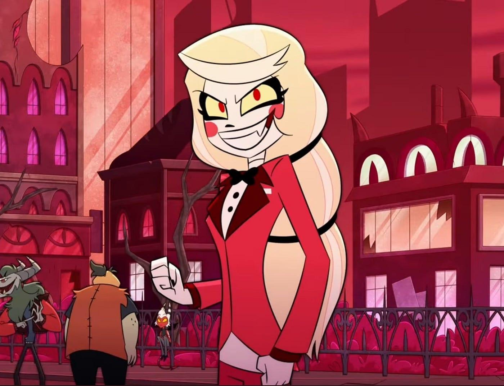
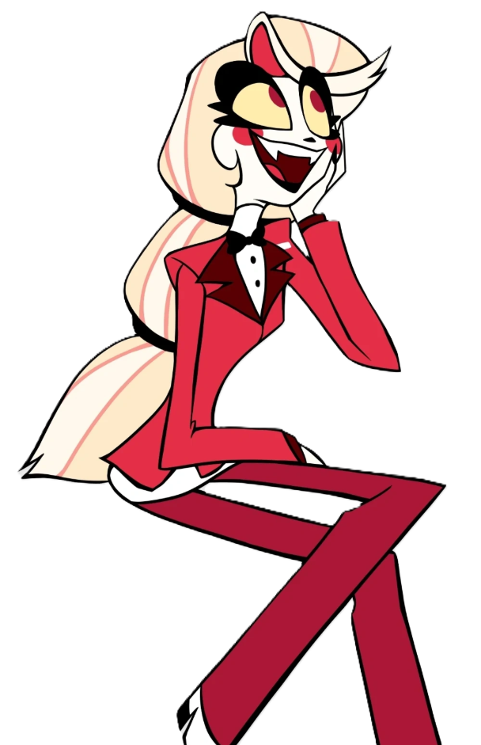
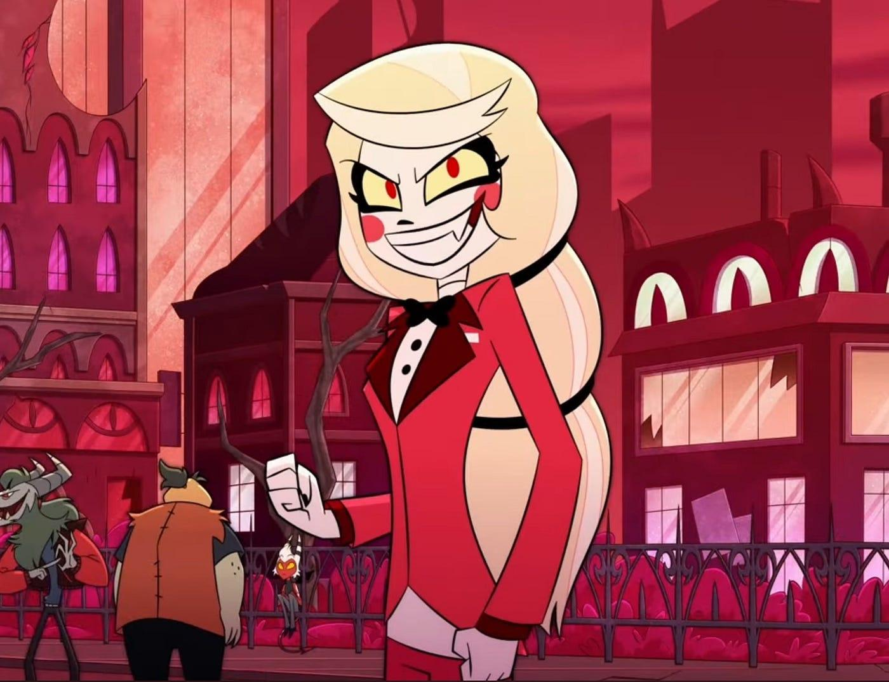
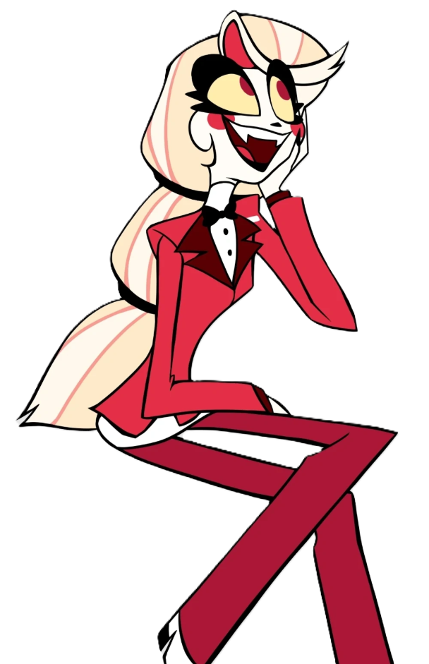

⛧ Charlie Morningstar je princeznou pekla a dcerou Lucifera a Lilith. Je zakladatelkou Hazbin Hotelu a naší velmi optimistickou protagonistkou. Snaží se vždy každému pomoci a vše napravit, ačkoliv tím často situaci zhorší. Snaha se však cení, že? Zároveň je nadšená do zpěvu a tance, což ostatní postavy občas trochu otravuje.
 


